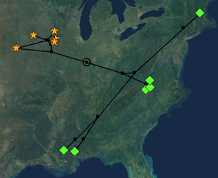
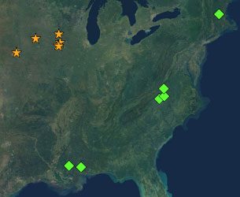

Installation
To install the Cartographer package, the "cartographer" directory must be installed in the "mesquite" directory within the "Mesquite Folder" that contains your copy of Mesquite. Cartographer requires version 1.06 or later of Mesquite.
Choosing a base map
The first step is to choose a base map you wish to use as the background image of your distribution map. Find a base map that you can use as you need (that is, the copyright permissions for the base map will allow you to reproduce it as you wish), and that is of a known projection. Obviously, you need the base map in a digital form to use it in Cartographer. Make sure as well that the base map is of high-enough resolution for its final use. Save the digital version of the file on disk.
Creating a file with data
In addition to choosing a base map, you will need to create a new data file in Mesquite, with a character matrix, of Geographic Data type. This will automatically create a matrix with two characters, the first latitude, the second latitude. Enter at least some of your latitude-longitude data. The longitude/latitude data must be in decimal degrees (e.g., 34.1287), and should use the convention that latitudes in the northern hemisphere are positive, in the southern hemisphere negative, and longitudes in the western hemisphere are negative, in the eastern hemisphere positive. Thus, the latitude and longitude of one point in North America is (43.000, -81.254). It will be easiest if the data file is saved in the same directory as is the map image file.
Taxa versus specimens
In Cartographer, the elements that are plotted on the map for which geographic data are specified are called "taxa", as the objects in Mesquite whose characteristics are examined are called taxa. This reflects Mesquite's heritage as a phylogenetics program. (If Mesquite had been written initially as a mapping program, then the entities to be plotted would probably have been called "specimens" or "localities".)
If you wish to make a map in which the localities of individual specimens are plotted, then each taxon in Mesquite corresponds to a specimen or group of specimens from one locality. If your matrix contains data for multiple localities within one species, then each of these localities will be represented by a different "taxon" in your matrix. You can specify which species each "taxon" belongs to by specifying a Taxon Group for that taxon, as outlined on the Taxon Symbols & Groups Page.
Deciding the form of the distribution map: a tree or just taxa?
Once you have your base map image as well as at least a few localities entered into your geographic matrix in Mesquite, you then need to decide which type of distribution map you wish to have Cartographer create. In particular, will you ever with to plot a tree that connects the taxa, as shown in the image below, at left? If so, then you will wish to plot the taxa in a tree window. If you only want to make distribution or dot map without a tree, then there are advantages to avoid the tree window and instead plot the taxa in a taxa window - this provides a more natural interface for standard distribution maps.
 |
 |
Plotting a tree on
a map |
Plotting taxa on
a map |
Opening a window with a map
The steps you need to take to open a window showing a map with taxa plotted depends upon whether you want to plot a tree or not.
Plotting a tree on a map:
- Choose New Tree Window from the Taxa & Trees menu.
- In the dialog box that appears, choose the source of the tree. The tree window will then appear.
- With the tree window frontmost, choose "Plot Tree" from the Tree Form submenu of the Drawing menu.
- In the dialog box that appears, choose "Plot on Map".
- In the dialog box that then appears, tell Mesquite the projection of the map (e.g., Lambert Azimuthal Equal-Area).
- In the dialog box that then appears, tell Mesquite the source of the latitude and longitude data (presumably Stored Characters).
- You will then be asked for the file containing the base map image (likely a JPG or GIF). You can exchange the map for another one later by using Choose Base Map under the Plot menu.
The base map will appear, but it will be uncalibrated, and so your taxa and nodes will not be plotted correctly. At this point you will need to calibrate the map.
Plotting taxa (without a tree) on a map:
- Choose New Taxa Window from the Taxa & Trees menu.
- If a dialog box appears in which one of the choices is "Plot on Map", choose it (at least in standard Mesquite 1.06, you will not be asked this question, as Plot on Map is the only available option, but later versions may add new features which will necessitate this choice).
- In the dialog box that then appears, tell Mesquite the projection of the map (e.g., Lambert Azimuthal Equal-Area).
- In the dialog box that then appears, tell Mesquite the source of the latitude and longitude data (presumably Stored Characters).
- You will then be asked for the file containing the base map image (likely a JPG or GIF). You can exchange the base map for another one later by using Choose Base Map under the Plot menu.
The base map will appear, but it will be uncalibrated, and so your taxa and nodes will not be plotted correctly. At this point you will need to calibrate the map.
Calibrating the projection
At this point you will need to calibrate the projection. This is fully detailed on the Calibration page, but in short this involves:
- touching the Calibration Tool on at least three spots of known latitude and longitude and setting their values
- setting the parameters of the projection using the Projection Parameters dialog box (Plot menu), OR asking Cartographer to estimate the parameter values for you using the Optimize Parameters command (Plot menu).
OR
- loading in the parameters and calibration points from a previously saved parameters and calibration file (the maps that are distributed with Cartographer have associated paramCalib.xml files that contain this information)
Fixing up the display
There are many options that you can use to adjust the display of the map; see the pages on Taxon Symbols and Display Options for details.
One will commonly want to
- turn off showing of taxon names (Drawing>Names>Show Taxon Names).
- turn off standard taxon spots (Drawing>Show Standard Taxon Spots if in a taxa window, Drawing>Show Terminal Nodes if in a tree window).
- turn on showing of taxon symbols based upon the group of the taxon (Taxa>Show Taxon Group Symbols).
- turn off showing of calibration points (Plot>Calibration Points>Show Calibration Points).